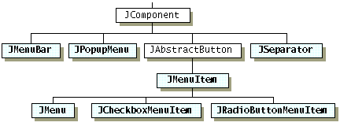
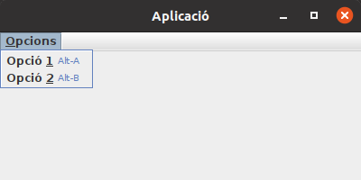
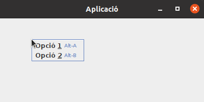

Les aplicacions d'escriptori acostumen a tenir una barra de menús.
Per afegir aquest component, s'utilitza la classe JMenuBar.
Per afegir una barra de menús a una finestra, no es fa de la mateixa forma com s'afegeixen altres components: s'ha d'utilitzar el mètode setJMenuBar(menuBar) de la finestra (JFrame).
Abans, però, cal crear els menús, afergir elements de cada menú i afegir els menús a la barra de menús.
Els elements que es poden afegir a un menú són:
Com es pot veure en el següent diagrama de classes, els elements d'un menú són similars a botons.
Per tant, es podran utilitzar molts dels seus mètodes, i la forma de gestionar esdeveniments serà similar.
La classe JMenu serveix per crear els menús que s'afegiran a la barra de menús i per crear els submenús.

Els elements han de tenir un text, però també s'hi pot afegir una imatge al davant.
També s'hi pot afegir una etiqueta d'ajuda (tooltip) amb el mètode setToolTipText(helpText) i una drecera (shotcut keys o combinació de tecles) per facilitar la selecció d'opcions amb el teclat.
Més endavant es veurà com gestionar les accions sobre els elements dels menús.
De moment, només dir que es gestionen igual que amb qualsevol botó.
Per afegir un separador entre elements, s'utilitza el mètode addSeparator().
Per crear un submenú, només cal crear un menú amb els seus elements i afegir-lo al menú pare.
private static void crearMenu() {
// Crear la barra de menús
JMenuBar menuBar = new JMenuBar();
// Crear menú Opcions
JMenu menu = new JMenu("Opcions");
menu.setMnemonic(KeyEvent.VK_O);
// Afegir items al menú
menu.add(crearMenuItem("Opció 1", KeyEvent.VK_1, KeyEvent.VK_A, "op1"));
menu.add(crearMenuItem("Opció 2", KeyEvent.VK_2, KeyEvent.VK_B, "op2"));
// Afegir menú Opcions a la barra de menús
menuBar.add(menu);
// Afegir la barra de menús a la finestra
f.setJMenuBar(menuBar);
}
private static JMenuItem crearMenuItem(String text, int mnemonic, int accelerator, String action) {
JMenuItem mi = new JMenuItem(text);
mi.setMnemonic(mnemonic);
mi.setAccelerator(KeyStroke.getKeyStroke(accelerator, InputEvent.ALT_DOWN_MASK));
// TODO: configurar acció i afegir controlador
// mi.setActionCommand(action);
// mi.addActionListener(optionControl);
return mi;
}

Un menú contextual és un menú flotant que apareix al clicar el botó secundari sobre un component per mostrar les opcions relacionades amb aquest component.
Els passos a seguir són:
private static void crearMenuContext() {
// Crear menú flotant
JPopupMenu ctxMenu = new JPopupMenu();
// Afegir items al menú
ctxMenu.add(crearMenuItem("Opció 1", KeyEvent.VK_1, KeyEvent.VK_A, "op1"));
ctxMenu.add(crearMenuItem("Opció 2", KeyEvent.VK_2, KeyEvent.VK_B, "op2"));
// Afegir un panell (o qualsevol component) a la finestra
JPanel jp = new JPanel();
f.getContentPane().add(jp, BorderLayout.CENTER);
// Crear i afegir listener al panell
jp.addMouseListener(new MouseAdapter() {
@Override
public void mousePressed(MouseEvent e) {
boolean botoDret = SwingUtilities.isRightMouseButton(e);
Component c = e.getComponent();
int x = e.getX();
int y = e.getY();
if (botoDret) {
ctxMenu.show(c, x, y);
}
}
});
}
